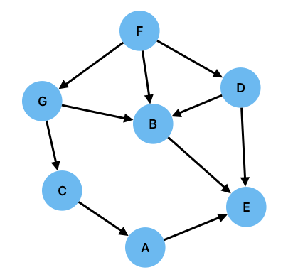
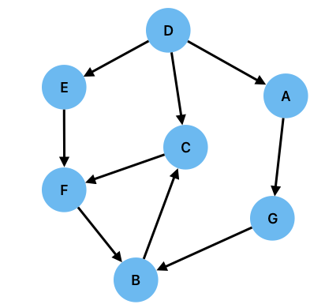
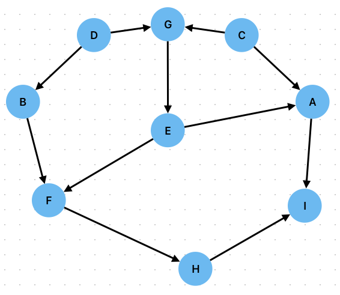

Exercise 7: Proof and Search#
Consider the following rule based system:
i) \(F\implies D\)
ii) \(F\implies G\)
iii) \(E\implies D\)
iv) \(B\implies E\)
v) \(E\implies A\)
vi) \(C\implies A\)
vii) \(G\implies C\)
viii) \(G\implies B\)
ix) \(D\implies B\)
Given \(F\), prove \(E\) by forward and backward chaining using both breadth-first and depth-first search. In each of the four cases, write down the order in which nodes are searched assuming that nodes are evaulated in alphabetical order. You may find it helpful to draw out the graphical representation of the rules.
Solution

a)
Forward chaining, breadth-first.
Start at \(F\).
Layer 1 nodes are \(B\), \(D\), \(G\). None of them solve the problem so continue.
Layer 2 nodes are \(C\) (from \(G\)) and \(E\) (from \(B\) and \(D\)).
\(E\) is our goal, and we have reached it via \(F\)-\(B\)-\(D\)-\(G\)-\(C\)-\(E\).
Forward chaining, depth-first.
Start at \(F\).
\(F\) connects to \(B\), \(D\), \(G\). Search \(B\) first.
\(B\) does not solve the problem, so search nodes linked from \(B\): \(E\).
\(E\) is our goal, and we have reached it via \(F\)-\(B\)-\(E\).
Backward chaining, breadth-first.
Start at \(E\).
Layer 1 (nodes connecting into \(E\)) is \(A\), \(B\), \(D\). None of these solve the problem so continue.
Layer 2 nodes are \(C\) (from \(A\)), \(F\) (from \(B\), \(D\)), \(G\) (from \(B\)).
\(F\) is known and so we proved our goal via \(E\)-\(A\)-\(B\)-\(D\)-\(C\)-\(F\).
Backward chaining, depth-first.
Start at \(E\).
\(E\) has incoming edges from \(A\), \(B\), \(D\). Search \(A\) first.
\(A\) is not known, so search nodes linked to \(A\): \(C\).
\(C\) is not known, so search nodes linked to \(C\): \(G\).
\(G\) is not known, so search nodes linked to \(G\): \(F\).
\(F\) is known and so we proved our goal via \(E\)-\(A\)-\(C\)-\(G\)-\(F\).
Consider the following rule based system:
i) \(D\implies A\)
ii) \(D\implies E\)
iii) \(E\implies F\)
iv) \(D\implies C\)
v) \(C\implies F\)
vi) \(F\implies B\)
vii) \(B\implies C\)
viii) \(A\implies G\)
ix) \(G\implies B\)
Given \(D\), prove \(B\) by forward and backward chaining using both breadth-first and depth-first search. In each of the four cases, write down the order in which nodes are searched assuming that nodes are evaulated in alphabetical order. You may find it helpful to draw out the graphical representation of the rules.
Solution

Forward chaining, breadth-first.
Start at \(D\).
Layer 1 nodes are \(A\), \(C\), \(E\). None of them solve the problem so continue.
Layer 2 nodes are \(F\) (from \(E\) and \(C\)) and \(G\) (from \(A\)). None of them solve the problem so continue.
Layer 3 nodes are \(B\) (from \(F\) and \(G\)).
\(B\) is our goal, and we have reached it via \(D\)-\(A\)-\(C\)-\(E\)-\(F\)-\(G\)-\(B\).
Forward chaining, depth-first.
Start at \(D\).
\(D\) connects to \(A\), \(C\), \(E\). Search \(A\) first.
\(A\) does not solve the problem, so search nodes linked from \(A\): \(G\).
\(G\) does not solve the problem, so search nodes linked from \(G\): \(B\).
\(B\) is our goal, and we have reached it via \(D\)-\(A\)-\(G\)-\(B\).
Backward chaining, breadth-first.
Start at \(B\).
Layer 1 (nodes connecting into \(B\)) is \(F\), \(G\). None of these solve the problem so continue.
Layer 2 nodes are \(A\) (from \(G\)), \(C\) (from \(F\)), \(E\) (from \(F\)). None of these solve the problem so continue.
Layer 3 nodes are \(D\) (from \(A\), \(C\), \(E\)).
\(D\) is known and so we proved our goal via \(B\)-\(F\)-\(G\)-\(A\)-\(C\)-\(E\)-\(D\).
Backward chaining, depth-first.
Start at \(B\).
\(B\) has incoming edges from \(F\), \(G\). Search \(F\) first.
\(F\) is not known, so search nodes linked to \(F\): \(C\), \(E\). Search \(C\) first.
\(C\) is not known, so search nodes linked to \(C\): \(D\).
\(D\) is known and so we proved our goal via \(B\)-\(F\)-\(C\)-\(D\).
Consider the following rule based system:
i) \(D\implies B\)
ii) \(D\implies G\)
iii) \(C\implies G\)
iv) \(C\implies A\)
v) \(G\implies E\)
vi) \(D\implies B\)
vii) \(B\implies F\)
viii) \(E\implies F\)
ix) \(F\implies H\)
x) \(E\implies A\)
xi) \(A\implies I\)
xii) \(H\implies I\)
Given \(D\), prove \(I\) by forward and backward chaining using both breadth-first and depth-first search. In each of the four cases, write down the order in which nodes are searched assuming that nodes are evaulated in alphabetical order. You may find it helpful to draw out the graphical representation of the rules.
Solution

Forward chaining, breadth-first.
Start at \(D\).
Layer 1 nodes are \(B\), \(G\) None of them solve the problem so continue.
Layer 2 nodes are \(E\) (from \(G\)) and \(F\) (from \(B\)). None of them solve the problem so continue.
Layer 3 nodes are \(A\) (from \(E\)) and \(H\) (from \(F\)). None of them solve the problem so continue.
Layer 4 nodes are \(I\) (from \(A\) and \(H\)).
\(I\) is our goal, and we have reached it via \(D\)-\(B\)-\(G\)-\(E\)-\(F\)-\(A\)-\(H\)-\(I\).
Forward chaining, depth-first.
Start at \(D\).
\(D\) connects to \(B\), \(G\). Search \(B\) first.
\(B\) does not solve the problem, so search nodes linked from \(B\): \(F\).
\(F\) does not solve the problem, so search nodes linked from \(F\): \(H\).
\(H\) does not solve the problem, so search nodes linked from \(H\): \(I\).
\(I\) is our goal, and we have reached it via \(D\)-\(B\)-\(F\)-\(H\)-\(I\).
Backward chaining, breadth-first.
Start at \(I\).
Layer 1 (nodes connecting into \(I\)) is \(A\), \(H\). None of these solve the problem so continue.
Layer 2 nodes are \(C\) (from \(A\)), \(E\) (from \(A\), \(F\)), \(F\) (from \(H\)). None of these solve the problem so continue.
Layer 3 nodes are \(B\) (from \(F\)), \(G\) (from \(E\)). None of these solve the problem so continue.
Layer 4 nodes are \(D\) (from \(B\) and \(G\)),
\(D\) is known and so we proved our goal via \(I\)-\(A\)-\(H\)-\(C\)-\(E\)-\(F\)-\(B\)-\(G\)-\(D\).
Backward chaining, depth-first.
Start at \(IU\).
\(B\) has incoming edges from \(A\), \(H\). Search \(A\) first.
\(A\) is not known, so search nodes linked to \(A\): \(C\), \(E\). Search \(C\) first.
\(C\) is not known and has no incoming edges, so track back to \(A\) and search next node, \(E\)
\(E\) is not known, so search nodes linked to \(E\): \(G\).
\(G\) is not known, so search nodes linked to \(G\): \(C\), \(D\). \(C\) has already been searched so search $D
\(D\) is known and so we proved our goal via \(I\)-\(A\)-\(C\)-\(E\)-\(G\)-\(D\).